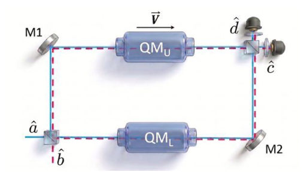

← Index · ← Previous · Next →
Authors: Olga Leskovjanová, Klára Baksová, Jan Provazník, Ladislav Mišta,, Nicolai Friis
Type: theory · Category: quantum information and computing · PDF: https://arxiv.org/pdf/2605.28404v1
Analysis basis: full PDF text, analyzed in chunks
Topic relevance: 🔥 entanglement & information structure 4/5
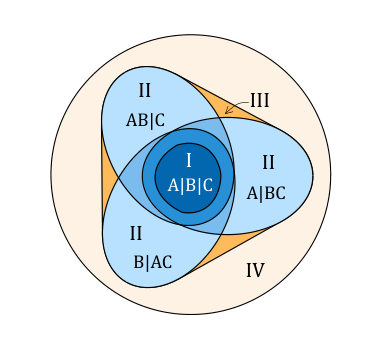
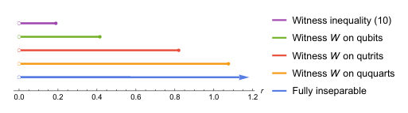
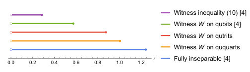
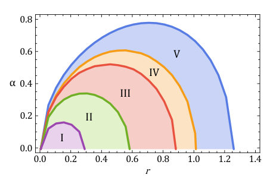
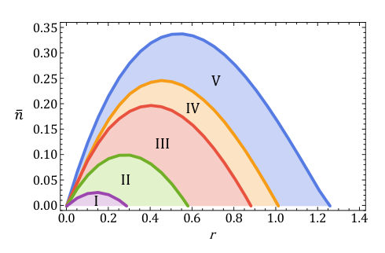
Summary. The paper explores whether Gaussian states can be fully inseparable without being genuinely multipartite entangled. By analyzing various three-mode Gaussian families using local projections to finite-dimensional subspaces, the authors find no evidence for such states and conjecture that all fully inseparable Gaussian states are genuinely multipartite entangled.
Why it may be interesting. This is highly relevant to quantum optics and continuous-variable quantum information as it addresses a fundamental question about the structure of entanglement in Gaussian states and suggests that standard covariance matrix-based tests might be sufficient for GME detection.
Main problem. The paper investigates whether 'fully inseparable biseparable' (FIB) Gaussian states exist, specifically whether there are Gaussian states that are entangled across every bipartition but are still expressible as a convex mixture of states separable with respect to different partitions.
Main result. The authors find that for all tested families of three-mode Gaussian states, states appearing to be FIB are actually genuinely multipartite entangled (GME), leading to the conjecture that all fully inseparable Gaussian states are GME.
Method. The study uses the PPT criterion for entanglement detection, projections of Gaussian density matrices onto finite-dimensional Fock subspaces, and semidefinite programming (SDP) to construct fully decomposable witnesses.
Model / system. The study focuses on three-mode continuous-variable Gaussian states, including families constructed from mixtures of two-mode squeezed vacuum states with single-mode squeezed, thermal, or coherent states, as well as noisy GHZ-like Gaussian states.
Key observables. Squeezing parameter (r), mean photon number (n), displacement (alpha), and noise/mixing parameter (eta).
Important parameters / regimes. The dimension of the local projection subspaces (d=2, 3, 4) and the squeezing parameter (r).
Assumptions / limitations. The study is restricted to three-mode Gaussian states and relies on the observation that the gap between full inseparability and GME shrinks with increasing projection dimension to form a conjecture.
Figures summary. Figure 1 shows the hierarchy of multipartite entanglement; Figures 2-6 show detection ranges for various Gaussian state families (SMSV, thermal, coherent, and noisy GHZ) across different detection methods and subspace dimensions.
Paper structure. The paper introduces the distinction between full inseparability and GME, defines the Gaussian state models, describes the numerical methods for Fock-basis projection, presents results for various state families, and concludes with a conjecture and discussion of implications.
Genuine multipartite entanglement and full inseparability are two inequivalent quantum resources. Even though all genuinely multipartite entangled states are also fully inseparable, not all fully inseparable states are genuinely multipartite entangled. There exist fully inseparable states that can be prepared as convex mixtures of states separable with respect to different bipartite splits. Here, we are interested in examples of Gaussian states that possess this type of entanglement, so-called fully inseparable biseparable states. We show for several archetypical families of multimode Gaussian states that fully inseparable biseparable candidate states are actually genuinely multipartite entangled. Using projections to finite-dimensional subspaces and fully decomposable witnesses, we observe a shrinking of the regions of potentially fully inseparable biseparable Gaussian states with growing dimension of the projection subspaces. We therefore conjecture that all fully inseparable Gaussian states are genuinely multipartite entangled.
Authors: Karim Elgammal, Marc Maußner
Type: both · Category: quantum information and computing · PDF: https://arxiv.org/pdf/2605.27640v1
Analysis basis: full PDF text, analyzed in chunks
Topic relevance: 🔥 QC/QI experiment 4/5
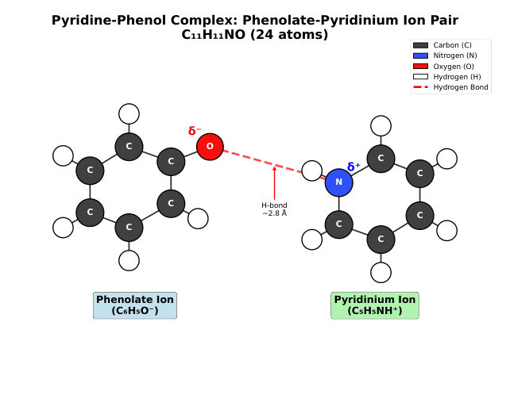
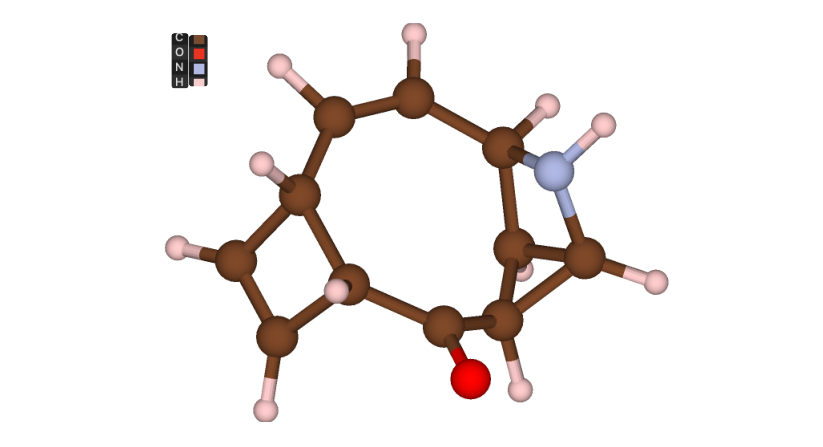
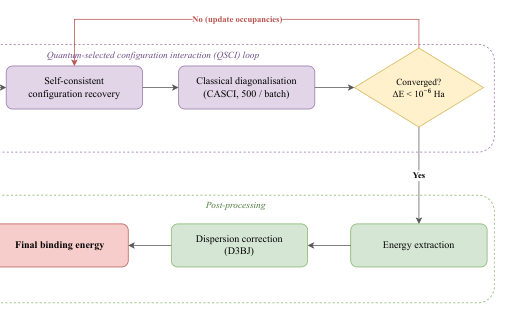
Summary. This paper demonstrates a hybrid quantum-classical workflow called QuantumPave that uses a quantum processor to sample electronic configurations for calculating binding energies. By simulating a pyridine-phenol complex, the authors show that current NISQ-era hardware can achieve chemically relevant results for industrial materials science problems. The approach highlights the potential of quantum-centric supercomputing to solve complex molecular recognition tasks.
Why it may be interesting. not directly relevant
Main problem. The study aims to demonstrate the feasibility of using a quantum-centric supercomputing workflow to predict additive binding energies in asphalt, a critical factor in road infrastructure durability.
Main result. The QSCI/SQD algorithm on the 54-qubit IQM Emerald processor exactly reproduced the active-space CASCI reference binding energy of -3.52 kcal/mol, proving that chemically meaningful results are attainable on current NISQ hardware.
Method. A hybrid quantum-classical workflow (QuantumPave) using Quantum-Selected Configuration Interaction (QSCI) where a quantum processor samples electronic configurations and classical HPC performs diagonalization, integrated with machine-learning interatomic potentials (ORB v3) for geometry optimization.
Model / system. A 24-atom pyridine-phenol hydrogen-bonded complex (C11H11NO) serving as a representative model for asphalt binder interactions, mapped onto a 54-qubit IQM Emerald superconducting processor using a (10e, 10o) active space.
Key observables. Additive binding energy (in kcal/mol and eV).
Important parameters / regimes. Active space of 10 electrons in 10 orbitals; 5000 measurement shots; 10^-6 Ha energy tolerance; NISQ regime.
Assumptions / limitations. The discrepancy between calculated and experimental values is attributed to the use of a compact/limited active space; the study assumes the pyridine-phenol complex is a sufficient proxy for asphalt binder interactions.
Figures summary. Figure 1 shows the molecular structure of the pyridine-phenol complex; Figure 2 displays the 3D optimized structure from ORB v3; Figure 3 illustrates the QSCI workflow loop.
Paper structure. The paper introduces the industrial problem of asphalt aging, presents the QuantumPave hybrid workflow, details the QSCI algorithm and hardware implementation, compares results against classical (CASCI, DFT) and experimental benchmarks, and concludes with future scaling directions.
Quantum-centric supercomputing (in which a quantum processor samples the dominant electronic configurations and classical high-performance computing resources perform the diagonalisation) is emerging as a practical route to correlated electronic-structure calculations. We present QuantumPave, a hybrid quantum-classical workflow for computing additive binding energies in asphalt binder, a quantity central to the oxidative ageing of road infrastructure. Using a 24-atom pyridine-phenol hydrogen-bonded complex as a representative model, we couple machine-learning interatomic potentials (ORB v3) for geometry optimisation with quantum-selected configuration interaction (QSCI), also referred to as sample based quantum diagonalisation (SQD), in a (10e, 10o) active space run on the 54-qubit IQM Emerald processor. On hardware, SQD reproduces the active-space CASCI reference exactly, giving a binding energy of -3.52 kcal/mol (-0.153 eV); the device noise broadens the sampling to span the active space, so no zero-noise extrapolation is required. This active-space value describes a physical hydrogen bond that underbinds the calorimetric enthalpy of about -6.25 kcal/mol, the difference reflecting the compact active space. We show that chemically meaningful binding energies for an industrially relevant materials problem are attainable on current quantum hardware within a quantum-centric supercomputing workflow.
Authors: Gernot Akemann, Sung-Soo Byun, Seungjoon Oh
Type: theory · Category: statistical mechanics · PDF: https://arxiv.org/pdf/2605.28319v1
Analysis basis: full PDF text, analyzed in chunks
Topic relevance: driven-dissipative phase transition 3/5 · methods for driven-dissipative 3/5 · non-equilibrium dynamics 3/5 · non-equilibrium universality 3/5 · correlated / nonlocal dissipation 2/5 · entanglement & information structure 2/5
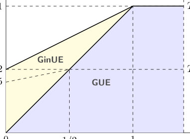
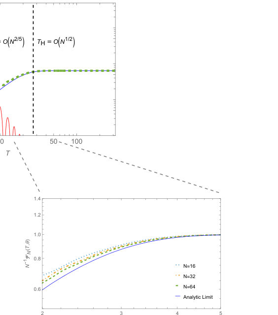
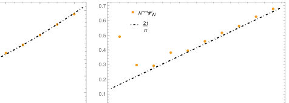
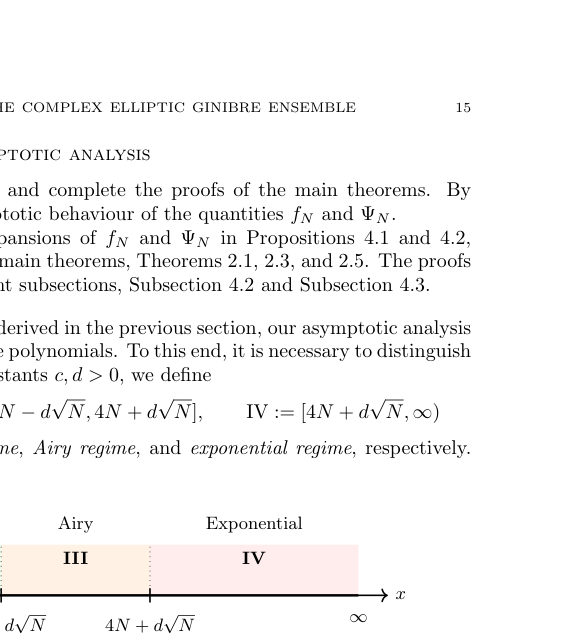
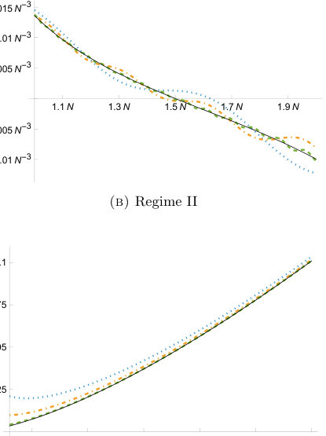
Summary. This paper provides a complete asymptotic characterization of the Dissipative Spectral Form Factor for the complex elliptic Ginibre ensemble. It maps out a phase diagram showing how the spectral statistics transition between Hermitian and non-Hermitian behaviors depending on the scaling of time and non-Hermiticity. The results rigorously define the scaling of key features like the Thouless and Heisenberg times.
Why it may be interesting. This work is highly relevant for researchers of open quantum systems as it provides a rigorous description of how dissipation and non-Hermiticity affect spectral correlations and the emergence of universal features like the ramp and plateau in quantum chaotic dynamics.
Main problem. The paper aims to derive the mathematically rigorous large-N asymptotic behavior of the Dissipative Spectral Form Factor (DSFF) for the complex elliptic Ginibre ensemble across various non-Hermiticity regimes.
Main result. The authors identify a complete phase diagram for the DSFF, characterizing the dip-ramp-plateau structure and the transition between GUE-type (linear ramp) and GinUE-type (quadratic ramp) statistics, including the scaling of Thouless and Heisenberg times.
Method. The study employs the framework of determinantal point processes, using orthogonal polynomial techniques, Christoffel-Darboux formulas, and uniform asymptotic expansions (Bessel, Airy, and exponential regimes) to analyze the large-N limit.
Model / system. The model is the Complex Elliptic Ginibre Ensemble (eGinUE), a non-Hermitian random matrix model that interpolates between the Hermitian GUE limit and the strongly non-Hermitian Ginibre limit, representing open, dissipative quantum chaotic systems.
Key observables. Dissipative Spectral Form Factor (DSFF), split into connected and disconnected components; Thouless time (T_Th); Heisenberg time (T_H).
Important parameters / regimes. Non-Hermiticity parameter (tau); scaling parameters (alpha and gamma) for the non-Hermiticity and time variables; matrix dimension (N).
Assumptions / limitations. The analysis is restricted to the large-N (asymptotic) limit and focuses on the simplest ensemble without additional symmetries.
Figures summary. Figure 1(a) shows the dip-ramp-plateau structure of the DSFF with characteristic time scales, and Figure 1(b) illustrates the universality crossover in the (alpha, gamma) phase plane; Figure 2 provides numerical illustration in the strong non-Hermiticity regime.
Paper structure. The paper begins with the definition of the eGinUE and the DSFF, followed by the decomposition into connected and disconnected components. It then proceeds through a detailed asymptotic analysis across four regimes (Bessel, Oscillatory, Airy, and Exponential) to identify the phase diagram and characteristic time scales, concluding with mathematical appendices on expansion coefficients.
We study the dissipative spectral form factor (DSFF) at complex time $T e^{iθ}$ for the complex elliptic Ginibre ensemble with non-Hermiticity parameter $τ\in [0,1)$. As the matrix dimension $N \to \infty$, we consider the natural scalings in both the time variable and the non-Hermiticity parameter, namely $T = O(N^γ)$ and $1 - τ= O(N^{-α})$. For all regimes $γ\ge 0$ and $α\ge 0$, we derive the precise asymptotic behaviour of both the disconnected and connected components of the DSFF. In particular, we explicitly characterise the dip--ramp--plateau structure, including the dip time and the Heisenberg time. In addition, we identify the mesoscopic regime $α\in (0,1)$, which interpolates between the behaviour of the DSFF of non-Hermitian random matrices and the spectral form factor (SFF) of Hermitian ensembles. We further provide an explicit description of the phase diagram, in which the ramp exhibits quadratic, linear, or intermediate behaviour depending on the scaling parameters.
Authors: T. Kullick, M. Bojer, J. von Zanthier, G. S. Agarwal
Type: theory · Category: quantum information and computing · PDF: https://arxiv.org/pdf/2605.28378v1
Analysis basis: full PDF text, analyzed in chunks
Topic relevance: quantum measurements 3/5 · Dicke superradiance 2/5 · free-space correlated emission 2/5 · interference shaping light 2/5 · superradiant laser 2/5
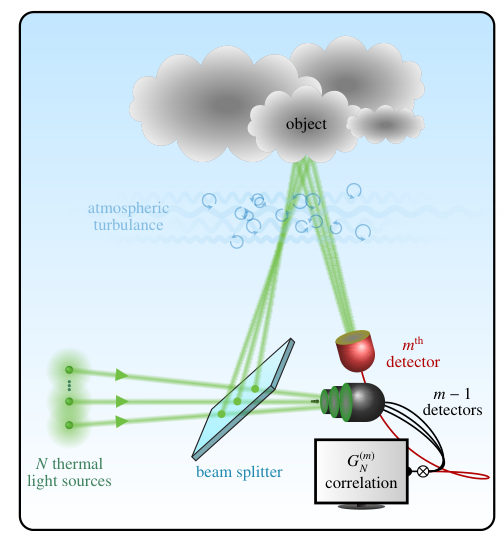
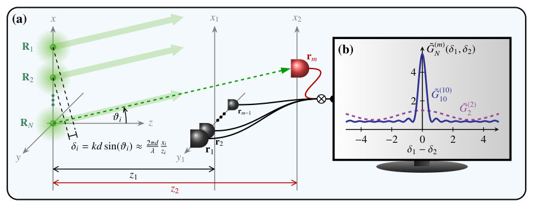
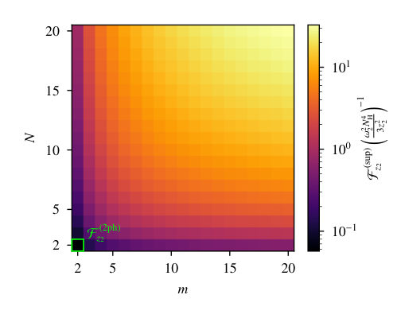
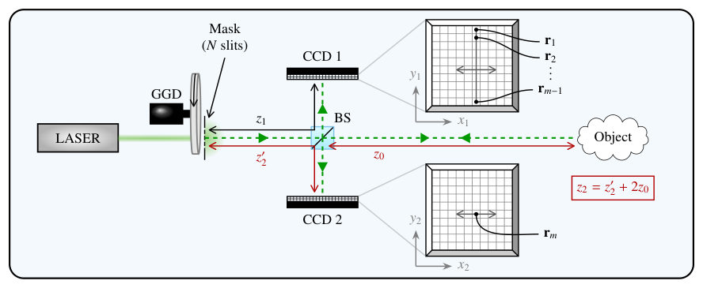
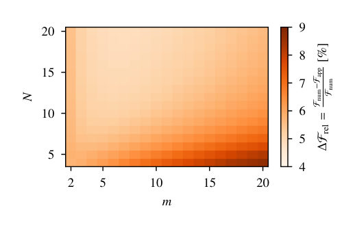
Summary. The paper proposes a new LIDAR technique called Superradiant LIDAR that uses multiple independent thermal light sources and higher-order intensity correlations. This method significantly improves distance measurement sensitivity, outperforming traditional LIDAR by a factor proportional to the number of light sources used.
Why it may be interesting. It demonstrates how exploiting collective effects (superradiance) and higher-order correlations can significantly enhance parameter estimation precision, which is a core theme in quantum metrology and quantum optics.
Main problem. Enhancing the sensitivity of Light Detection and Ranging (LIDAR) for measuring the distance of remote objects beyond the limits of traditional and coherent LIDAR.
Main result. The proposed Superradiant LIDAR achieves a Cramér-Rao bound that is undercut by a factor of N compared to traditional LIDAR, with sensitivity further improved by increasing the correlation order m.
Method. The authors use analytical derivations and numerical evaluations of the m-th order photon correlation function and Fisher information, developing a high-precision fit function to describe the scaling behavior.
Model / system. A system of N statistically independent thermal light sources (TLS) placed equidistantly along an axis, where light is reflected by a remote object and detected using m-th order intensity correlations.
Key observables. m-th order correlation function (G(m)N) and Fisher information (F)}^{(sup)
Important parameters / regimes. Number of light sources (N), correlation order (m), unknown distance (z2), and phase differences (delta_i)
Assumptions / limitations. Measurements follow Poisson statistics, light sources are identical and uncorrelated, and pixel width is small enough for the phase approximation to hold.
Figures summary. Figure 1 shows the experimental schematic; Figure 2 compares correlation functions and shows the steeper slopes for higher N; Figure 3 highlights the significant gains in Fisher information for larger N and m; Figure 4 compares the accuracy of the analytical lower bound versus the proposed fit function.
Paper structure. The paper introduces the LIDAR problem, proposes the Superradiant LIDAR scheme, provides the mathematical framework for correlation functions, derives analytical bounds and fits for Fisher information, and validates these with numerical simulations.
In recent years, light detection and ranging (LIDAR) has seen a steep rise in the sensitivity of measuring the distances of remote objects. Here, we propose to enhance the sensitivity of LIDAR even further by exploiting Dicke's concept of superradiance, i.e., the collective light emission of statistically independent light sources. By using $N$ thermal light sources (TLS) and measuring intensity correlations of order $m \geq 2$ instead of $m=1$, i.e., the intensity, we show that the Cramér-Rao bound on the measurement of the distance of a remote object undercuts that of traditional LIDAR by a factor of $N$, and can be reduced further with increasing correlation order $m$. Our numerical calculations are supported by analytical expressions for the special cases of two and three TLS and a general approximate expression for any number of TLS.
Authors: Sara Oliver-Bonafoux, Raúl Toral, Amitabha Chakrabarti
Type: theory · Category: statistical mechanics · PDF: https://arxiv.org/pdf/2605.28196v1
Analysis basis: full PDF text, analyzed in chunks
Topic relevance: non-equilibrium dynamics 3/5 · driven-dissipative phase transition 2/5 · methods for driven-dissipative 2/5 · non-equilibrium universality 2/5
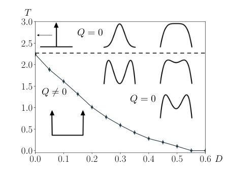
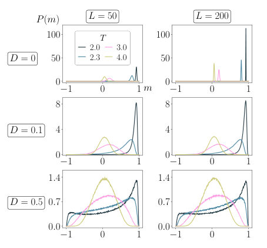
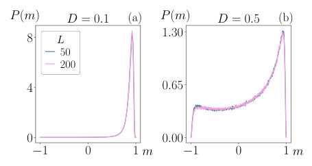
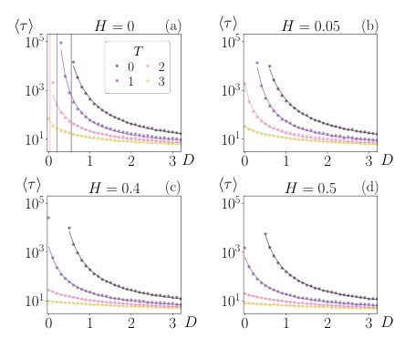
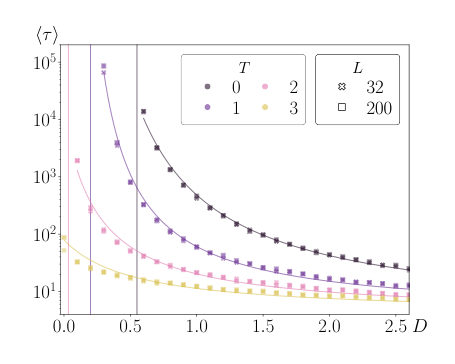
Summary. This paper examines how steady bias and random magnetic fields influence the rate of transitions between states in a kinetic Ising model. It finds that while moderate noise helps overcome energy barriers, excessive noise leads to a loss of directional control. The results highlight how stochastic driving can effectively minimize finite-size effects in the system's dynamics.
Why it may be interesting. The study of noise-induced transitions and the modulation of energy barriers by stochastic and bias fields is highly relevant to understanding decoherence and switching dynamics in open quantum systems and driven many-body systems.
Main problem. Investigating how a combination of a weak steady bias field and time-dependent Gaussian random fields affects barrier crossing and switching dynamics in a two-state system.
Main result. Moderate stochastic fields lower the effective energy barrier and facilitate transitions, while strong noise induces backflow and reduces directional selectivity; additionally, stochastic driving suppresses finite-size effects.
Method. Monte Carlo simulations using single-spin heat-bath dynamics on a 2D square lattice.
Model / system. A kinetic Ising model on a 2D square lattice with periodic boundary conditions, subject to a Hamiltonian with ferromagnetic coupling, a constant bias field H, and a time-dependent Gaussian random field h_r(t).
Key observables. Probability distribution of magnetization P(m), time-averaged magnetization Q, and average first-passage time
Important parameters / regimes. Temperature (T), noise intensity (D), bias field (H), and system size (L).
Assumptions / limitations. The stochastic magnetic field is assumed to be spatially homogeneous (uniform across the lattice).
Figures summary. Fig 1 shows a phase diagram in the (D, T) plane; Fig 2 displays P(m) for various parameters; Fig 3 compares P(m) for different system sizes; Fig 4 shows
Paper structure. The paper introduces the model and its phase diagram, explores the effect of noise and bias on the magnetization distribution, analyzes first-passage times and their dependence on noise and bias, and concludes with a discussion on system-size dependence and optimal transition conditions.
We study barrier crossing in a two-state system, namely the kinetic Ising model, in the presence of a weak bias field and spatially homogeneous, but time-dependent, Gaussian random fields. We find that the bias field determines the location of the dominant maxima of the probability distribution function of the magnetization, whereas the noise intensity controls their sharpness and stability of the distribution. A moderate stochastic field lowers the effective energy barrier and facilitates transitions between ordered states, while strong noise induces broad distributions and significant backflow, which reduces directional selectivity. Our results suggest that efficient barrier crossing requires a balanced combination of moderate stochastic driving and controlled bias.
Authors: Oded Farago
Type: theory · Category: statistical mechanics · PDF: https://arxiv.org/pdf/2605.28445v1
Analysis basis: full PDF text, analyzed in chunks
Topic relevance: non-equilibrium dynamics 3/5 · entanglement & information structure 2/5 · methods for driven-dissipative 2/5 · quantum measurements 2/5
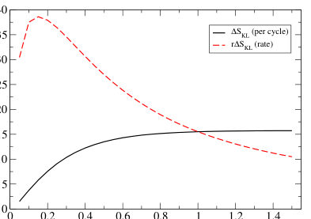
Summary. The paper treats stochastic resetting as a thermodynamic cycle of thermal expansion and compression. It demonstrates that in harmonic potentials, the entropy production of this cycle can be simplified to a state-function-like expression, and shows that the resulting thermodynamic features are robust even in anharmonic systems.
Why it may be interesting. This work is highly relevant for researchers in open quantum systems and non-equilibrium dynamics, as it provides a thermodynamic framework for understanding the irreversibility and entropy production in systems subject to non-unitary, resetting-like dynamics.
Main problem. The paper seeks to develop a thermodynamic characterization of stochastic resetting processes, specifically addressing whether entropy production can be reduced from complex trajectory-based measures to simpler state-function-like expressions.
Main result. The author proves that for a harmonic potential, entropy production reduces exactly to an expression determined by endpoint distributions, and shows that the observed thermodynamic features are qualitatively generic for anharmonic potentials.
Method. The study uses the Kullback-Leibler divergence between forward and reversed trajectory ensembles and employs Langevin simulations for anharmonic cases.
Model / system. A Brownian particle subject to overdamped Langevin dynamics in a one-dimensional potential (primarily harmonic, but also tested with a quartic potential) that undergoes stochastic resetting to the origin at periodic or Poissonian intervals.
Key observables. Entropy production (total, rate, and cycle-based), variance, probability current, and effective temperature.
Important parameters / regimes. Resetting rate (r), relaxation time (tau), damping coefficient (gamma), and the distinction between periodic and Poissonian resetting regimes.
Assumptions / limitations. Assumes the reset does not produce a perfect delta-function (finite width) and that the endpoint-based description serves as a lower bound for the full trajectory-level entropy production.
Figures summary. Figure 1 shows Langevin simulation results for an anharmonic potential, plotting entropy production per cycle and the entropy production rate as functions of cycle time.
Paper structure. The paper introduces the thermodynamic cycle analogy, develops the analytical framework for harmonic potentials using KL divergence, extends the analysis to entropy production rates for different resetting protocols, and validates the findings via simulations of anharmonic potentials.
We consider a Brownian particle confined by an external potential and subject to stochastic resetting to the origin. Motivated by the repetitive nature of the dynamics, we describe the process as a thermodynamic cycle of thermal expansion and collapse, analyzed via a framework based on the Kullback-Leibler (KL) divergence between forward and reversed trajectory ensembles. While the entropy production generally depends on the full trajectory ensemble and cannot be reduced to thermodynamic state variables alone, we show that the harmonic potential constitute a special case, where the entropy production reduces exactly to a state-function-like expression determined solely by the distributions before and after resetting. Explicit analytical results are derived for periodic and Poissonian resetting. At low resetting rates $r$, the entropy production rate grows linearly with $r$ and is proportional to the symmetric KL divergence between the reset and equilibrium distributions. At very high rates, the resetting process becomes effectively perpetual and the entropy production vanishes. Langevin simulations for an anharmonic quartic potential display the same generic behavior, indicating that these features are not restricted to harmonic confinement. Our results establish a direct connection between stochastic resetting, thermodynamic cycles, and information-theoretic measures of irreversibility.
Authors: Waleed El-Sayed, Elham Zohari, Joe Itoi, Peyman Parsa, Gustavo de Oliveira Luiz, Joseph E. Losby, Misa Hayashida, Marek Malac, Paul E. Barclay
Type: both · Category: other · PDF: https://arxiv.org/pdf/2605.27536v1
Analysis basis: full PDF text, analyzed in chunks
Topic relevance: quantum optics experiment 3/5 · correlated / nonlocal dissipation 2/5 · driven-dissipative phase transition 2/5
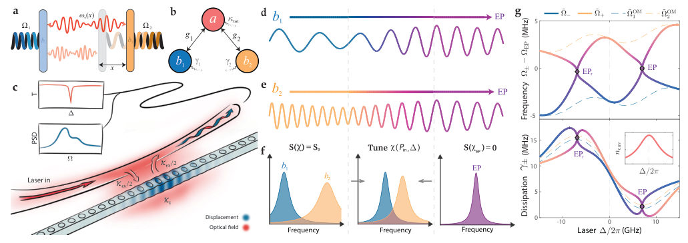
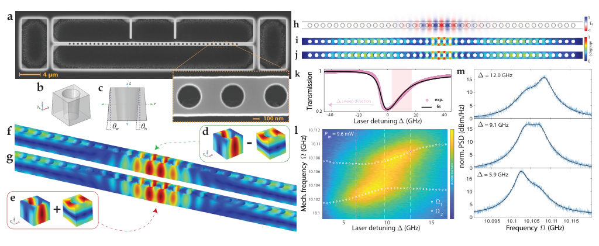
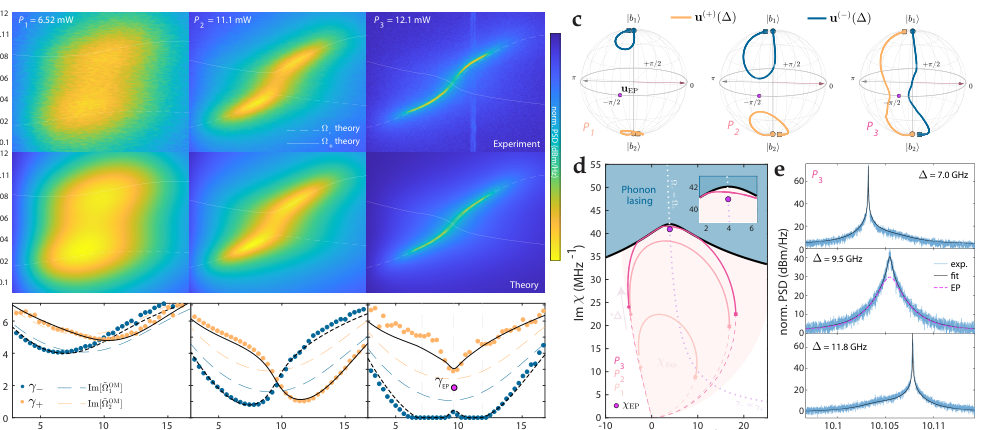
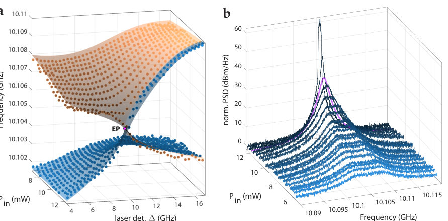
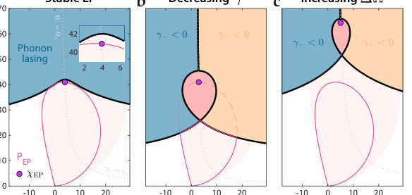
Summary. This paper reports the first experimental access to an exceptional point in a diamond optomechanical crystal. By using engineered structural asymmetry, the authors demonstrate how to tune mechanical mode hybridization and redistribute optomechanical damping. This provides a new platform for non-Hermitian physics and topological dynamics in diamond-based quantum technologies.
Why it may be interesting. It demonstrates experimental control over non-Hermitian singularities and eigenvector rotation, which is highly relevant for developing direction-dependent quantum state transfer and topological protection in hybrid quantum networks.
Main problem. The experimental achievement and utilization of exceptional points (EPs) in diamond optomechanical systems to leverage non-Hermitian phenomena like chiral dynamics and topological state transfer.
Main result. The researchers successfully reached an exceptional point in a diamond optomechanical crystal by using structural symmetry breaking to couple two mechanical modes, observing asymmetric redistribution of damping and branch-switching topology.
Method. The study uses structural asymmetry (sidewall angles) to mix mechanical modes and employs a fiber taper for evanescent coupling, with data analysis involving coupled-mode model fitting and COMSOL simulations.
Model / system. A diamond optomechanical crystal (OMC) nanobeam where a single optical cavity mode is coupled to two high-frequency mechanical resonances (breathing and flexural modes) via radiation pressure and structural symmetry breaking.
Key observables. Mechanical power spectral density (PSD), mechanical eigenfrequencies, damping rates, and optical transmission spectra.
Important parameters / regimes. Optical wavelength ~1565 nm, mechanical frequencies ~10.1 GHz, optomechanical coupling rates ~290 kHz, and the transition from weak coupling to the exceptional point and phonon-lasing threshold.
Assumptions / limitations. The derivation assumes a strong coherent intracarray field, neglects small radiation-pressure-induced cavity resonance shifts, and approximates mechanical frequency shifts as linear with photon number.
Figures summary. Figure 1 shows the experimental setup and conceptual EP evolution; Figure 2 displays the SEM image and simulated mode profiles; Figure 3 illustrates Bloch-sphere trajectories and stability maps; Figure 4 shows the 2D map of eigenfrequencies.
Paper structure. The paper introduces the concept of EPs in optomechanics, describes the diamond platform and fabrication-induced symmetry breaking, presents the experimental observation of the EP and its topological signatures, and discusses the implications for tunable spin-mechanical coupling.
Multimode cavity optomechanical systems allow light to couple otherwise non-interacting mechanical resonators, enabling non-Hermitian phenomena such as exceptional points, where eigenfrequencies and eigenvectors of coupled modes coalesce. Accessing an exceptional point and its nearby parameter space is a first step towards chiral mode dynamics and topological state transfer. Diamond optomechanical devices support strong coherent optomechanical coupling required to tune resonances to an exceptional point, as well as strain-coupling to spin-defects for hybrid quantum technologies, but have not yet been used for multimode non-Hermitian physics. Here we tune to an exceptional point in a diamond optomechanical crystal, which uses structural symmetry breaking to produce two high-frequency mechanical resonances coupled to an optical cavity. The exceptional point is reached within a stable operating window below the phonon-lasing threshold, and we observe asymmetric redistribution of optomechanical damping and anti-damping between hybridized modes. These results establish diamond optomechanical crystals as a platform for non-Hermitian optomechanics, opening routes to topological mechanical dynamics in hybrid spin-phonon interfaces.
Authors: Edmond Orignac, Roberta Citro, Thierry Giamarchi
Type: theory · Category: quantum gases · PDF: https://arxiv.org/pdf/2605.28090v1
Analysis basis: full PDF text, analyzed in chunks
Topic relevance: analog quantum simulation 3/5 · Keldysh / 2PI / non-Gaussian methods 2/5 · non-equilibrium dynamics 2/5
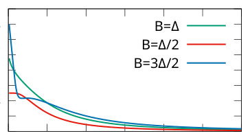
Summary. This paper provides a theoretical generalization of the Hall effect in multi-leg bosonic ladders using bosonization. It establishes a universal connection between Hall resistance and the density derivative of charge stiffness and characterizes how temperature affects the Hall response in Meissner and Vortex phases.
Why it may be interesting. This paper is highly relevant for many-body dynamics and AMO physics as it provides analytical predictions for transport properties (Hall effect) in synthetic gauge fields, which are a key component of ultracold atom experiments in optical lattices.
Main problem. The study aims to generalize the Hall effect and Hall resistance from two-leg to N-leg bosonic ladders and to understand the temperature dependence of the Hall response in different magnetic flux regimes.
Main result. The Hall resistance is found to be proportional to the derivative of the logarithm of the charge stiffness with respect to density, a result that is robust for N-leg ladders. Additionally, Hall imbalance corrections are exponentially small in the Meissner phase at low temperatures but follow a power law in the Vortex phase.
Method. The authors use bosonization and perturbation theory in the band curvature, employing a basis transformation with Hahn/Chebyshev polynomials to decouple modes and Green's function techniques for temperature-dependent analysis.
Model / system. The system consists of interacting bosonic N-leg ladders threaded by a magnetic flux (artificial gauge fields), modeled using a bosonized Hamiltonian including Tomonaga-Luttinger Liquid terms, transverse interchain hopping, and band curvature.
Key observables. Hall resistance (Rh), Hall voltage (Vh), Hall imbalance (Ph), and charge stiffness (uK).
Important parameters / regimes. Magnetic flux (B), temperature (T), particle density (rho0), transverse hopping (t_perp), and Tomonaga-Luttinger parameter (K).
Assumptions / limitations. The analysis assumes a perturbative expansion in band curvature and focuses on the low-field limit and the validity of the bosonization approach for the ladder geometries.
Figures summary. Figure 1 shows the temperature dependence of the Hall imbalance in the Meissner phase, Vortex phase, and at the commensurate-incommensurate transition for various magnetic flux values.
Paper structure. The paper introduces the problem of N-leg ladders, applies bosonization and basis transformations to derive Hall resistance formulas, analyzes the temperature dependence of the Hall imbalance in different flux regimes, and discusses the robustness of the results.
We use bosonization to analyze the ground state Hall response of interacting bosonic N-leg ladders threaded by a flux. We derive an explicit expression of the Hall imbalance in a perturbative expansion in the band curvature, retaining fully the interactions. For small magnetic field the Hall resistance is proportional to the derivative of the logarithm of the charge stiffness with respect to density, generalizing the result obtained in the two leg case. We also consider the effect of temperature, and establish that at low temperature, corrections to the Hall resistance are exponentially small in the Meissner phase.
Authors: Rozhin Yousefjani, Saif Al-Kuwari
Type: theory · Category: quantum information and computing · PDF: https://arxiv.org/pdf/2605.28289v1
Analysis basis: full PDF text, analyzed in chunks
Topic relevance: quantum measurements 3/5 · correlated / nonlocal dissipation 2/5 · non-equilibrium dynamics 2/5
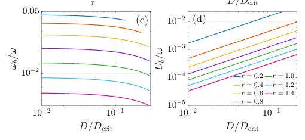
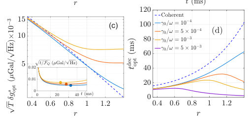
Summary. This paper proposes a new type of quantum gravimeter using squeezed-Fock states in a levitated mechanical system. By using a two-phonon pump to create squeezing, the gravitational signal is exponentially amplified. The study highlights a fundamental trade-off where squeezing enhances the signal but also converts mechanical damping into anisotropic noise.
Why it may be interesting. It presents a novel application of squeezed-state engineering and open quantum system dynamics (anisotropic noise) to enhance the precision of a quantum sensor.
Main problem. Developing high-sensitivity, compact quantum gravimeters that overcome the mass-independent sensitivity bottleneck and the weak intrinsic nonlinearity of nanomechanical resonators.
Main result. The authors propose a mechanical squeezed-Fock qubit gravimeter that provides exponential signal amplification via the anti-squeezed quadrature while preserving mass scaling, though it introduces a trade-off with anisotropic decoherence.
Method. The study uses Bogoliubov transformations, the Rotating-Wave Approximation (RWA), and Quantum Estimation Theory (calculating QFI and CFI) to analyze sensitivity and optimal readout strategies.
Model / system. A levitated mesoscopic mechanical particle modeled as a Duffing oscillator driven by a detuned two-phonon pump, described by an effective Hamiltonian in a squeezed-Fock basis and a master equation for zero-temperature damping.
Key observables. Gravity-induced transition rate, excited squeezed-Fock population, Bloch vector components, and Quantum/Classical Fisher Information.
Important parameters / regimes. Squeezing parameter (r), Duffing nonlinearity (D), mechanical damping rate (gamma_0), detuning (delta), and pump amplitude (Ap).
Assumptions / limitations. The use of the Rotating-Wave Approximation (RWA) and the assumption of a weak-force regime where the gravity-induced coupling is much smaller than the qubit gap.
Figures summary. Figures include a map of the RWA validity in the (r, D/D_crit) plane and a demonstration of the locally optimal projective readout for the decoherent gravimeter.
Paper structure. The paper introduces the scientific problem of gravimetry, defines the mechanical squeezed-Fock model and Hamiltonian, analyzes the signal enhancement via squeezing, evaluates the impact of decoherence on sensitivity, and determines the optimal measurement readout strategy.
Levitated mechanical systems are promising candidates for quantum gravimetry, as gravity couples directly to their center-of-mass motion, enabling the large mass of a mesoscopic particle to serve as a sensing resource. In this paper, we propose a mechanical squeezed-Fock qubit gravimeter using a Duffing oscillator that is driven by a detuned two-phonon pump. In the squeezed-Fock basis, the gravitational force couples to the anti-squeezed quadrature, which enhances the gravity-induced transition rate while preserving the direct mass scaling of the mechanical force coupling. We show that sensitivity improves with reduced effective qubit splitting that is controlled by the squeezing parameter and the Duffing nonlinearity. We further analyze mechanical damping and show that squeezing converts ordinary dissipation into anisotropic qubit noise, setting a practical trade-off between signal amplification and decoherence rate. These results identify the mechanical squeezed-Fock qubit as a new platform for quantum-enhanced gravimetry.
Authors: Li-Bao Fan, Yu Guo, Shan Ma, Chuan-Cun Shu
Type: theory · Category: other · PDF: https://arxiv.org/pdf/2605.28511v1
Analysis basis: full PDF text, analyzed in chunks
Topic relevance: interference shaping light 3/5 · non-equilibrium dynamics 3/5
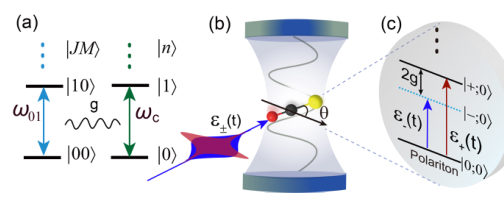
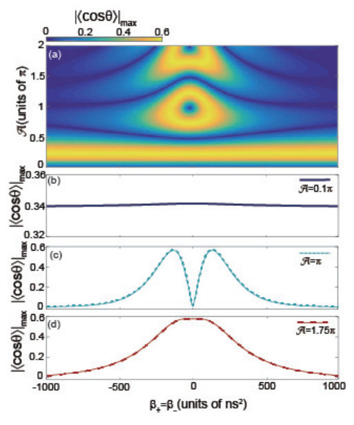
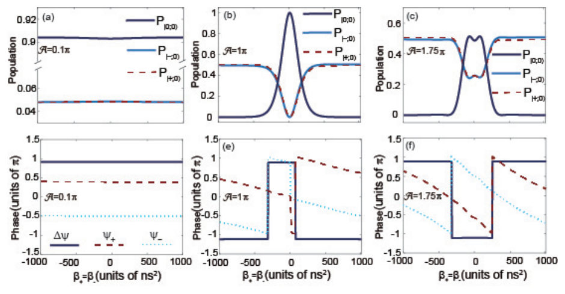
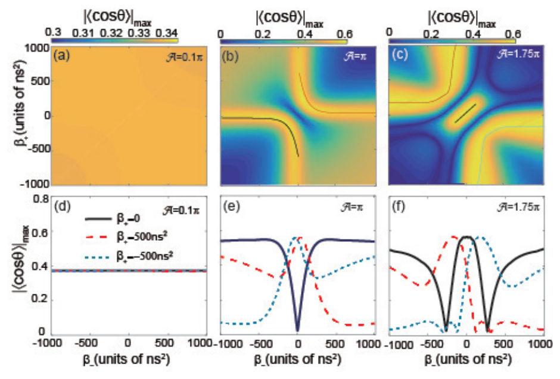
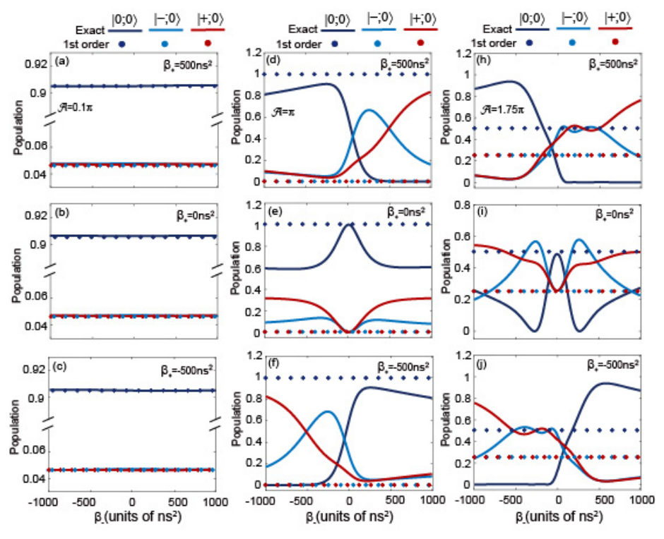
Summary. This paper investigates how chirped laser pulses can be used to control the orientation of a single molecule inside an optical cavity. It shows that by engineering the chirp rates, one can achieve high degrees of orientation and robust control that is resistant to frequency detuning. This work offers a new strategy for manipulating molecular polaritons in cavity-based quantum systems.
Why it may be interesting. It provides new insights into using spectral-phase modulation to control molecular polaritons and demonstrates how chirped pulses can activate multiphoton processes that deviate from standard analytical approximations in cavity QED.
Main problem. Achieving robust and precise coherent control over the orientation of a single molecule within an optical cavity using chirped-pulse engineering.
Main result. The study demonstrates that chirped pulses can precisely control molecular orientation, reaching a maximum degree of 0.5773, and that equal-chirp configurations provide superior robustness against frequency detuning.
Method. The authors use numerical integration of the time-dependent wave function and compare results with the first-order Magnus expansion to analyze population redistribution and multiphoton processes.
Model / system. A single carbonyl sulfide (OCS) molecule strongly coupled to a single-mode optical cavity, modeled using an extended Jaynes-Cummings model incorporating rotational states and a three-level polariton system.
Key observables. The degree of molecular orientation
Important parameters / regimes. Chirp rates (beta plus and beta minus), pulse amplitude (A), pulse detuning (delta), and the strong coupling regime (g0/omega_c <= 0.1).
Assumptions / limitations. The study assumes the ability to achieve photon blockade of higher dressed states to isolate a three-state system and neglects quadratic terms like cavity-field self-energy.
Figures summary. Fig 1 shows energy level diagrams in bare and dressed bases; Fig 2 shows orientation dependence on pulse amplitude and chirp; Fig 4 illustrates the orientation landscape and symmetry; Fig 5 compares numerical results to Magnus expansion; Fig 6 maps orientation robustness against detuning.
Paper structure. The paper introduces the physical system and model, presents the pulse engineering method, analyzes the results in weak and strong field regimes, evaluates the breakdown of analytical approximations, and concludes with a robustness analysis.
We present a theoretical investigation of coherent control over the orientation of an individual molecule strongly coupled with a cavity using chirped-pulse driving. Specifically, we explore the dynamics of carbonyl sulfide (OCS) molecules under the influence of two chirped pulses with different spectral phases. We compare two pulse configurations: one with equal chirp rates ($β_{+} = β_{-}$) and another with unequal chirp rates ($β_{+} \neq β_{-}$). Numerical simulations reveal that chirped pulses enable precise control of the molecular orientation, achieving a maximum orientation degree of 0.5773. By analyzing the distribution of molecular polariton states, we show that chirped pulses can activate multiphoton processes, leading to deviations from the predictions of first-order Magnus expansion methods. Additionally, we demonstrate the robustness of the maximum orientation with respect to chirp amplitude and detuning, providing insights into the role of pulse parameters in optimizing control. This work introduces a new strategy for controlling molecular orientation in cavity-based systems and offers valuable perspectives for future experimental applications.
Authors: Kiratholly Nandakumar Madhav Sharma, Juan Manuel Aguiar Hualde, Julian van Velzen, Phalgun Lolur
Type: theory · Category: quantum information and computing · PDF: https://arxiv.org/pdf/2605.28206v1
Analysis basis: full PDF text, analyzed in chunks
Topic relevance: non-equilibrium dynamics 3/5 · entanglement & information structure 2/5 · quantum measurements 1/5
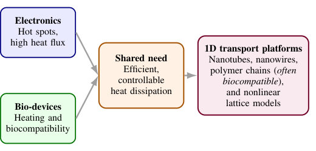
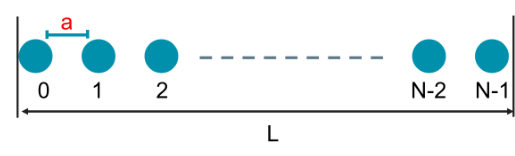
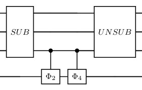
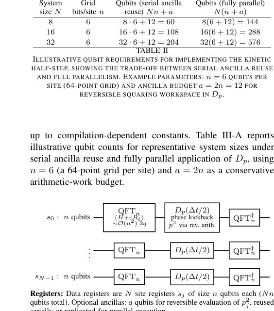
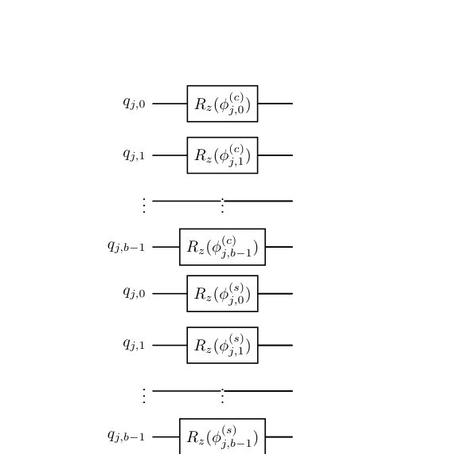
Summary. This paper presents a new method for simulating the quantum beta-FPUT lattice on future fault-tolerant quantum computers. By using a first-quantized approach and a clever decomposition of displacement operators, the authors reduce the circuit complexity and provide a detailed estimate of the necessary qubits and gates. This work establishes a blueprint for studying complex heat transport and phonon dynamics in nonlinear low-dimensional systems.
Why it may be interesting. It provides a scalable algorithmic approach to simulating nonlinear many-body dynamics and anomalous transport, specifically addressing how to bypass the high overheads of bosonic encoding in quantum computing.
Main problem. Developing an efficient digital quantum simulation framework for the quantum beta-FPUT lattice and estimating the resources required for fault-tolerant implementation.
Main result. The authors provide a concrete algorithmic blueprint and resource roadmap, demonstrating that a first-quantized approach using quadrature decomposition enables shallow circuits for simulating nonlinear transport dynamics.
Method. A first-quantized digital quantum simulation using Trotterized circuit blocks, a Hermitian quadrature decomposition of Fourier-mode displacement operators, and a Hadamard-test-based measurement workflow.
Model / system. A one-dimensional quantum beta-Fermi-Pasta-Ulam-Tsingou (beta-FPUT) lattice, characterized by a Hamiltonian with kinetic energy and a potential containing both quadratic and quartic anharmonic terms.
Key observables. Mode-resolved displacement correlators and quantum dynamical observables relevant to phonon lifetimes.
Important parameters / regimes. Lattice size (N), grid resolution (bits per site), mass (m), harmonic coupling (kappa), anharmonicity (beta), and Trotter step size (delta t).
Assumptions / limitations. The framework assumes fault-tolerant quantum hardware rather than NISQ-era devices and assumes periodic boundary conditions for the lattice.
Figures summary. Figure 1 shows motivation regarding heat dissipation in microelectronics and bio-devices; Figure 2 depicts the 1D FPUT chain; Figure 4 illustrates a two-site potential-layer circuit; Figure 5 shows circuits for implementing cosine and sine quadrature unitaries.
Paper structure. The paper progresses from physical motivation and the mathematical formulation of the beta-FPUT model to the construction of the quantum simulation framework, followed by error analysis, resource estimation, and a comparison with hardware roadmaps.
Heat conduction in low-dimensional systems exhibits strong deviations from Fourier behavior due to anharmonicity and long-lived vibrational correlations, challenging conventional computational approaches. The $β$-Fermi--Pasta--Ulam--Tsingou ($β$-FPUT) chain provides a minimal nonlinear lattice model for studying anomalous transport, yet its quantum real-time dynamics remain difficult to access with classical methods. We develop a first-quantized digital quantum-simulation framework for the quantum $β$-FPUT lattice, targeting fault-tolerant quantum computers. By working directly with discretized lattice displacements rather than truncated phonon occupation spaces, the approach captures anharmonic interactions while avoiding bosonic encoding overheads. We construct Trotterized circuit blocks for real-time evolution and introduce a Hermitian quadrature decomposition of Fourier-mode displacement operators that enables shallow quantum circuits for mode-resolved displacement correlators. We analyze the quantum resources required for the full simulation and measurement workflow, providing qubit counts, gate complexity, circuit-depth and resource estimates as functions of system size and resolution within a fault-tolerant workflow. These results establish a concrete algorithmic blueprint for simulating quantum transport dynamics in nonlinear low-dimensional lattice models on fault-tolerant quantum hardware.
Authors: Ming Yang
Type: theory · Category: quantum information and computing · PDF: https://arxiv.org/pdf/2605.28702v1
Analysis basis: full PDF text, analyzed in chunks
Topic relevance: entanglement & information structure 3/5 · quantum measurements 3/5
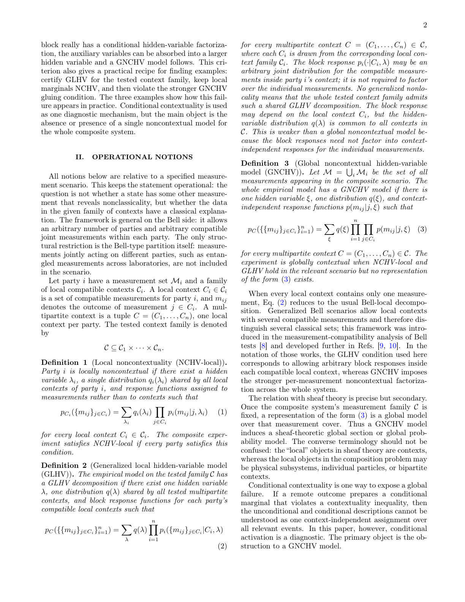
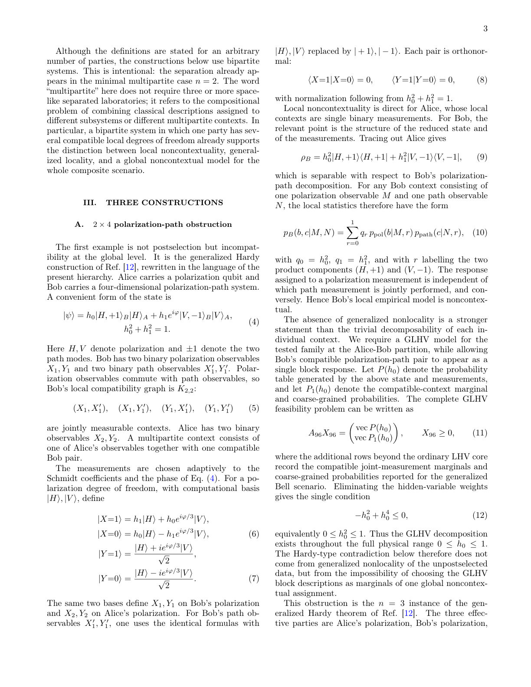
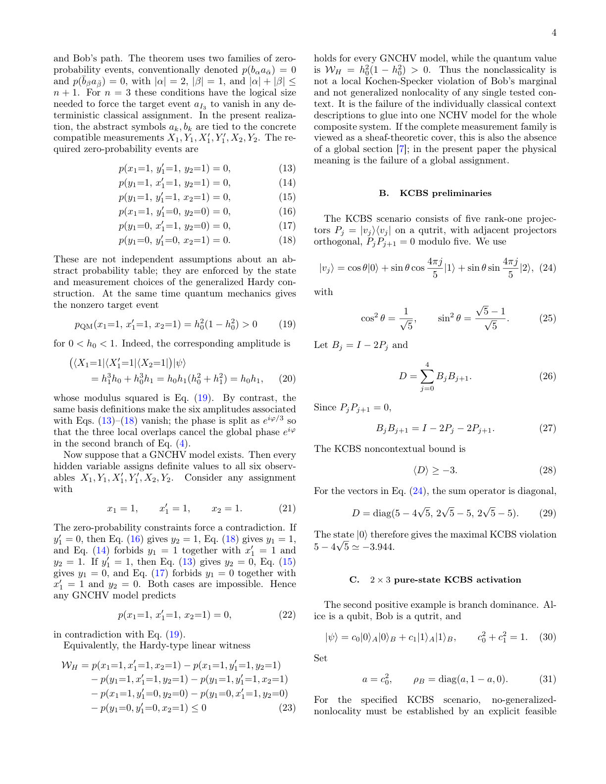
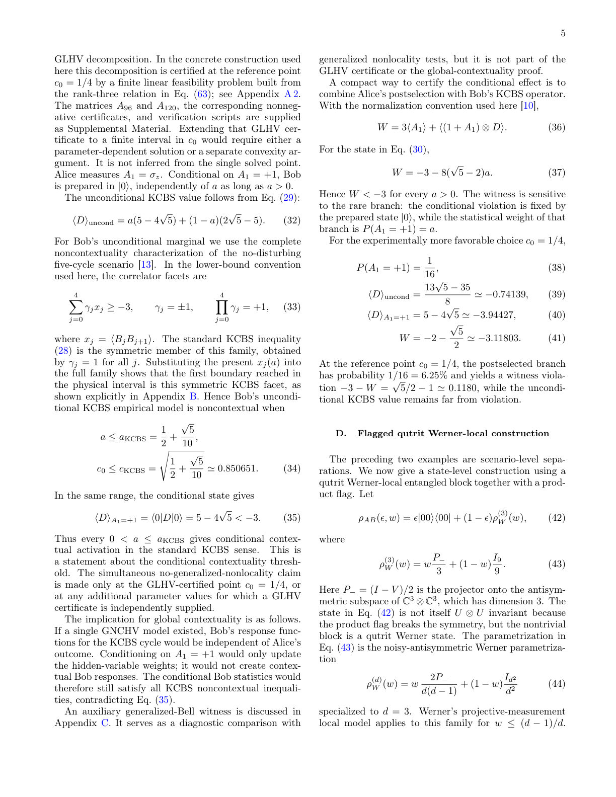
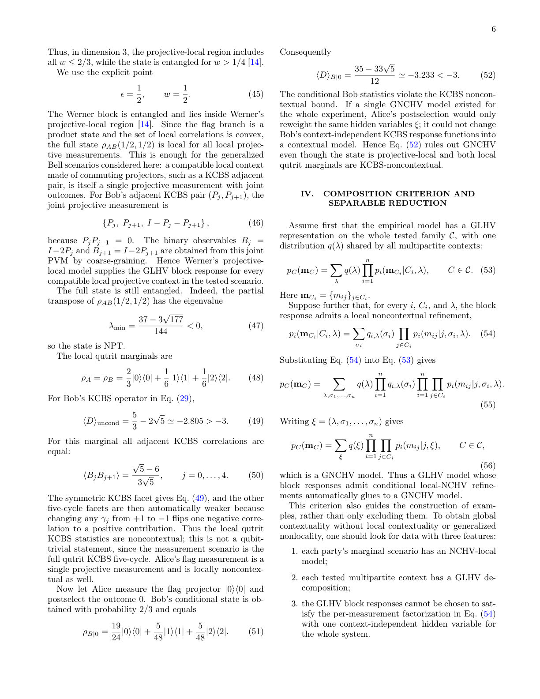
Summary. This paper introduces the concept of global contextuality, demonstrating that multipartite systems can exhibit nonclassical behavior that cannot be explained by a single global hidden-variable model, even when all local parts appear classical. Through three different bipartite constructions, the author shows that nonclassicality can emerge as a compositional obstruction when local classical descriptions cannot be 'glued' together.
Why it may be interesting. It provides a new fundamental classification of nonclassicality (global contextuality) that is distinct from standard Bell nonlocality and local Kochen-Specker contextuality, which is relevant for understanding the limits of classical simulations of multipartite quantum systems.
Main problem. Investigating the existence of 'global contextuality,' where a multipartite system fails to admit a single global noncontextual hidden-variable model even though all local subsystems are noncontextual and all multipartite contexts admit a generalized local hidden-variable description.
Main result. The paper proves that the absence of local contextuality and generalized Bell nonlocality does not imply the existence of a global noncontextual hidden-variable model, establishing global contextuality as a compositional obstruction to classicality.
Method. The author uses an operational approach involving three bipartite constructions (polarization-path, qubit-qutrit, and flagged qutrit Werner-local) and employs linear programming, quantifier elimination, and postselection to identify violations of global hidden-variable models.
Model / system. The study considers various bipartite measurement scenarios, including a 2x4 polarization-path system, a 2x3 qubit-qutrit system with KCBS observables, and a qutrit Werner-local state with a product flag.
Key observables. KCBS operator, polarization observables, and a Hardy-type linear witness.
Important parameters / regimes. Schmidt coefficients (h0, h1), weighting parameter (a), and the KCBS noncontextuality threshold (c0 <= 0.850651).
Assumptions / limitations. The claim regarding the absence of generalized nonlocality is restricted to specific measurement scenarios without cross-party joint measurements.
Figures summary. The paper includes a summary table (Table I) classifying the three different separation constructions based on their hidden resources and qualifications.
Paper structure. The paper defines the hierarchy of classicality, establishes a gluing criterion for global contextuality, and then presents three distinct constructions (incompatibility-based, algebraic/postselected, and state-level) to demonstrate the separation of scales.
A set of quantum data can look classical in every local test and still fail to admit a single classical explanation of the whole composite system. We formulate this failure as global contextuality. Here global means global in the physical sense of the whole multipartite system, not the local/global terminology of sheaf theory. Each party's local statistics are noncontextual and each measured multipartite context admits a generalized local hidden-variable description, but the GLHV block descriptions cannot be promoted to a single noncontextual hidden-variable model for the whole system. Three bipartite constructions exhibit this separation. A polarization-path construction gives a direct global obstruction. A qubit-qutrit KCBS construction gives an algebraic scenario-level example, with explicit formulas for the unconditional KCBS operator, the correlation-polytope constraints, and the postselected violation. A flagged qutrit Werner-local state gives a state-level example: the state is entangled and local for all projective measurements, its local qutrit marginals do not violate KCBS, yet postselection rules out a single GNCHV model. We also spell out the classical composition lemma: classical conditional hidden variables can be absorbed into a larger hidden variable, whereas quantum contextual data need not allow such a factorization. Within the general Bell-type framework considered here, with arbitrary parties and arbitrary local compatible contexts, but no cross-party joint measurements, the absence of local contextuality and GLHV-type generalized Bell nonlocality does not imply the existence of a global noncontextual hidden-variable model. Global contextuality is thus a compositional obstruction to classical explanation.
Authors: Maxim Sirotin
Type: theory · Category: other · PDF: https://arxiv.org/pdf/2605.27775v1
Analysis basis: full PDF text, analyzed in chunks
Topic relevance: entanglement & information structure 3/5 · quantum measurements 3/5
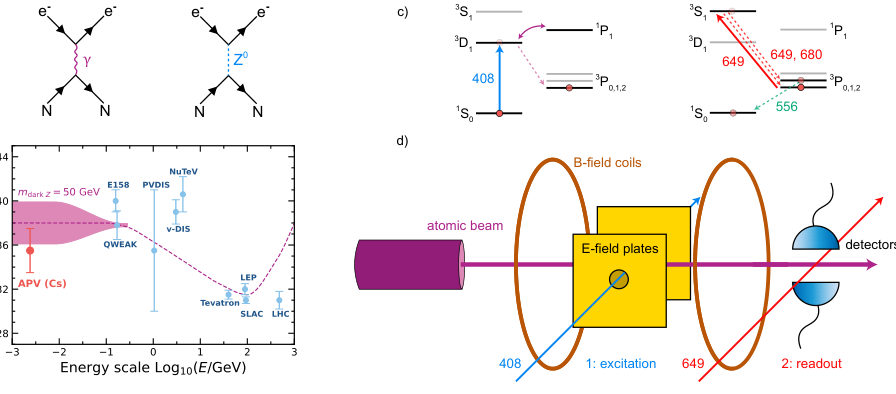
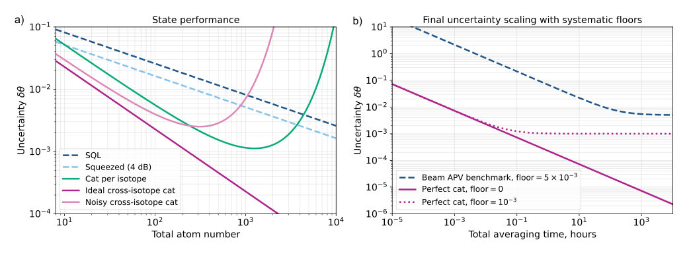
Summary. This paper explores how quantum entanglement can be used to enhance the precision of atomic parity violation measurements in isotope chains. It demonstrates that while cross-isotope entangled states are theoretically optimal for detecting new physics, practical limitations like systematic errors and decoherence must be carefully managed.
Why it may be interesting. It bridges quantum information theory (entanglement-enhanced metrology, cat states, DFS) with precision atomic spectroscopy, offering new ways to use many-body entanglement to probe fundamental physics.
Main problem. Determining the optimal quantum metrological strategy to detect deviations from Standard Model weak-charge scaling in atomic parity violation (APV) measurements across an isotope chain.
Main result. The paper identifies that a cross-isotope cat state is the information-optimal protocol for measuring deviations, though its utility is limited by systematic error floors and susceptibility to noise compared to more robust strategies.
Method. The author compares five quantum strategies (SQL, squeezed-array, same-isotope cat, cross-isotope cat, and DFS cat) using a parameter-estimation framework and simulations involving decoherence and gate infidelity.
Model / system. The study focuses on heavy atoms and ions (Cs, Yb, Ba+) and molecular arrays, modeling the nuclear-spin-independent weak Hamiltonian and the isotope-chain scaling of the weak charge.
Key observables. The deviation parameter (theta), transition rates, Ramsey phases, and the isotope-chain slope generator.
Important parameters / regimes. Nuclear weak charge (Qw), number of probes (N), Heisenberg limit (1/N scaling), and the systematic error floor.
Assumptions / limitations. The model assumes a specific form for the deviation pattern (h_A) and evaluates the impact of finite contrast and decoherence on the proposed quantum protocols.
Figures summary. Figure 1 shows the mechanism of parity violation and Standard Model tests; Figure 2 illustrates various APV platforms like neutral Yb and trapped ions; Figure 3 compares parameter uncertainty across different protocols.
Paper structure. The paper reviews the APV mechanism and current experimental state-of-the-art, introduces the metrological problem of isotope-chain scaling, presents a comparative analysis of various quantum entanglement strategies, and discusses the impact of noise and systematic limits.
Atomic parity violation (APV) provides a low-energy probe of the weak interaction between electrons and nuclei, complementary to collider tests of the Standard Model. Isotope-chain measurements are especially attractive because they test weak-charge scaling while reducing dependence on absolute atomic-structure theory. We review the APV mechanism, the state of the art in Cs and Yb, and recent trapped-ion, optical-lattice, and molecular proposals. Motivated by progress in coherent control of atoms, ions, and molecules, we ask a metrological question: given N probes distributed over an isotope chain, what quantum strategy optimally measures a deviation from Standard Model weak-charge scaling? The optimum is a particular form of a cross-isotope cat state protocol. We compare this protocol with the standard quantum limit, squeezed-array, same-isotope cat, and discuss extension to recently suggested decoherence-free subspace protocols. We show that entanglement can strongly accelerate statistical averaging, but the ultimate precision is set by APV-specific systematic floors which require careful studies.
Authors: Mustafa Gündoğan, Arash Ahmadi, Markus Krutzik
Type: theory · Category: other · PDF: https://arxiv.org/pdf/2605.27723v1
Analysis basis: full PDF text, analyzed in chunks
Topic relevance: quantum measurements 3/5 · interference shaping light 2/5

Summary. This paper analyzes a velocity sensor that uses quantum memories and squeezed light to improve measurement precision. It demonstrates that while realistic losses and noise limit the quantum advantage to a few percent, the squeezed-light scheme remains robust and superior to classical methods under near-term experimental conditions.
Why it may be interesting. It provides a rigorous metrological analysis of how non-classical states (squeezed light) perform in practical quantum memory-based sensing, specifically addressing the competition between signal accumulation and decoherence/loss.
Main problem. Investigating whether a memory-assisted velocimetry platform using squeezed light can achieve quantum enhancement despite realistic experimental imperfections like loss and incoherent noise.
Main result. The study finds that squeezed light provides a modest (few to ten percent) improvement in velocity sensitivity, and that this advantage is primarily limited by total transmission and phase stability rather than unconditional memory noise.
Method. The authors use Classical Fisher Information (CFI) to derive the Cramér-Rao bound for velocity estimation and employ a Gaussian model for the variance budget.
Model / system. A two-memory Mach-Zehnder interferometer where one memory is stationary and the other moves, mapping velocity to an interferometric phase. The system uses a coherent probe and squeezed vacuum with a Gaussian write-store-read lifetime model.
Key observables. Velocity sensitivity (Delta v), quadrature variance of the dark port, and the relative figure of merit (quantum gain).
Important parameters / regimes. Storage time (tau), memory lifetime (tau_mem), squeezing parameter (r), transmission efficiency (eta), and unconditional memory noise floor (pn).
Assumptions / limitations. The memory-generated noise is assumed to be phase-insensitive and diagonal in the number basis; the system operates in a small-signal/linear-response regime.
Figures summary. Figure 1 shows the experimental schematic; Figure 2 plots optimized gain vs. memory noise; Figure 3 compares shot-normalized sensitivity for different detection schemes; Figure 4 maps gain as a function of transmission and squeezing.
Paper structure. The paper introduces the interferometric setup, defines a Gaussian noise and loss model, derives the sensitivity limits using Fisher Information, performs numerical optimization of storage time, and concludes with a comparison of different detection regimes and noise impacts.
We propose a velocity sensor based on a two-memory Mach--Zehnder interferometer fed by a coherent probe and squeezed vacuum, read out by balanced homodyne detection. One memory is taken as a stationary reference, while the second memory moves during storage, so that its velocity is mapped onto a differential interferometric phase at readout. The two memories are otherwise assumed identical and are described by a Gaussian write--store--read lifetime together with the associated unconditional noise floor. Using the classical Fisher information, we derive the velocity sensitivity, the transmission threshold required for a target quantum gain, and the optimum storage time. The squeezed scheme improves on equal-resource coherent homodyne within an operating window set mainly by total transmission and phase stability. For representative near-term parameters, unconditional memory noise floors up to about $10^{-1}$ photons per trial do not by themselves remove the advantage; after optimization the improvement remains at the few-percent level and is limited chiefly by loss.
Authors: Hirofumi Yanagisawa, Abhisek Sinha, Ravi Kumar, Neill Lambert, Hirotaka Kitoh-Nishioka
Type: both · Category: other · PDF: https://arxiv.org/pdf/2605.28286v1
Analysis basis: full PDF text, analyzed in chunks
Topic relevance: quantum optics experiment 3/5 · interference shaping light 2/5
Summary. This paper shows that the site of electron emission from a single molecule can be controlled at a subnanometer scale simply by changing the energy of the incoming photons. By tuning the photon energy, researchers can switch between different molecular orbitals, effectively moving the electron 'birth site' without changing the optical field distribution. This provides a new mechanism for high-resolution nanoscale imaging and control.
Why it may be interesting. This work is highly relevant to quantum optics and molecular physics as it demonstrates a new way to manipulate quantum-scale electron pathways using the internal electronic structure (symmetry) of a molecule rather than external field shaping.
Main problem. Conventional optical control of electron-generation sites is limited by the need to physically shape local-field hotspots, making it impossible to independently select different substructures within the same field distribution.
Main result. The researchers demonstrated that electron birth-site control can be achieved at a subnanometric scale by tuning photon energy to selectively access molecular orbitals of different spatial symmetries, independent of the local-field profile.
Method. The study combines experimental electron emission measurements from single-molecule emitters with theoretical modeling using DFT (GAMESS/VASP) and a three-step emission model involving orbital-resolved weighting and field propagation.
Model / system. The experimental platform consists of single-molecule electron emitters (C60 multilayers) at the apex of a metallic tungsten nanotip under ultrahigh vacuum and a strong DC field.
Key observables. Far-field electron emission patterns (e.g., ring-like vs. two-lobed structures) and normalized lobe separation (d/d0).
Important parameters / regimes. Photon energies of 2.99 eV and 3.18 eV; subnanometric spatial resolution (~0.3 nm); DC field of 4.5 V/nm; electron yield < 0.05 per pulse.
Assumptions / limitations. The model assumes an incoherent sum of orbital contributions and utilizes a normal-incidence approximation for the decay constant of the post-barrier wavefunction.
Figures summary. Fig 1 compares field-based vs. energy-dependent control; Fig 2 shows experimental reversible switching of emission patterns and simulation overlays; Fig 3 demonstrates the invariance of patterns to polarization and power; Fig 4 shows the asymmetric energy-supply function.
Paper structure. The paper introduces the limitation of local-field control, presents the experimental demonstration of energy-dependent switching, provides a theoretical model for symmetry-selective excitation, and validates the mechanism through polarization and power-dependence tests.
Optical control of electron-generation sites has broadly enabled ultrafast nanoscale imaging, spectroscopy, and functional control. Existing approaches achieve nanoscale site selectivity by shaping localised optical fields around nanostructures, thereby limiting independent site selectivity within the same local-field hotspot. Here, using a single-molecule electron emitter, we show that site selectivity can instead be encoded in the electronic excitation pathway, enabling subnanometric control of electron birth sites within the same local-field hotspot. By tuning the photon energy, we selectively access molecular states of different spatial symmetry and reversibly switch the electron birth site between distinct locations in the same emitter, with the change read out directly in the far-field emission pattern. The switching depends on photon energy alone and is absent under variations in intensity or polarisation. Our results establish optical birth-site selectivity that is not dictated by the local-field distribution, opening a route to electron birth-site control through the electronic excitation pathway.
Authors: Karolina Gornicka, Brenden R. Ortiz, Matthew S. Cook, Heda Zhang, Andrew D. Christianson, Andrew F. May
Type: experiment · Category: strongly correlated electrons · PDF: https://arxiv.org/pdf/2605.28540v1
Analysis basis: full PDF text, analyzed in chunks
Topic relevance: Kondo & dissipative impurity 3/5
Summary. Researchers synthesized and characterized Ce3MgBi5, a new intermetallic compound that exhibits both geometric frustration and Kondo-lattice physics. The material shows a complex magnetic phase diagram and strong coupling between charge transport and magnetic order. This work provides a new platform for studying the competition between RKKY interactions and the Kondo effect in frustrated lattices.
Why it may be interesting. not directly relevant
Main problem. Investigating the interplay between geometric frustration, magnetic anisotropy, and Kondo-lattice physics in the newly synthesized Ce3MgBi5 compound.
Main result. The study identifies a Ce-based Kondo-lattice system with antiferromagnetic order below 4.2 K, featuring a complex H-T phase diagram with multiple metamagnetic transitions and strong magnetic anisotropy.
Method. Single crystals were synthesized via the Mg-Bi self-flux method and characterized using SQUID magnetometry, PPMS for high-field transport and heat capacity, and X-ray diffraction.
Model / system. The physical system is Ce3MgBi5, a member of the Ce3MPn5 family with a hexagonal P63/mcm structure featuring a distorted kagome-like Ce sublattice and zig-zag chains along the c-axis.
Key observables. Néel temperature (TN), magnetization (M), electrical resistivity (rho), magnetoresistance (MR), Hall effect, specific heat (Cp), and magnetic entropy (Smag).
Important parameters / regimes. TN approx 4.2 K, Weiss temperature (highly anisotropic), Sommerfeld coefficient (gamma approx 199 mJ mol-1 CeK-2), and spin-wave gap (Delta approx 4.96 K).
Assumptions / limitations. The use of La3MgBi5 as a nonmagnetic isostructural reference to subtract phonon background from specific heat measurements.
Figures summary. Fig 1 shows the crystal structure and Ce sublattice details; Fig 3 shows temperature-dependent resistivity and its derivative; Fig 4 shows temperature-dependent specific heat.
Paper structure. The paper begins with crystal synthesis and structural characterization, followed by magnetic properties and anisotropy, then moves to electrical transport and Hall effect measurements, and concludes with thermodynamic analysis of the Kondo-lattice behavior.
We report the synthesis and physical characterization of single-crystalline Ce3MgBi5, a previously unexplored member of the Ce3MPn5 family. This compound crystallizes in the hexagonal P63/mcm structure, featuring an anisotropic Ce sublattice composed of zig-zag chains along the c axis and a distorted kagome-like network in the basal plane. Magnetization measurements reveal antiferromagnetic order below TN approximately 4.2 K, accompanied by strong magnetic anisotropy and multiple field-induced metamagnetic transitions for fields applied perpendicular to [001], leading to a dome-shaped H-T phase diagram. Electrical transport exhibits characteristic signatures of a Ce-based Kondo lattice, including broad resistivity maxima and pronounced field-dependent anomalies in the magnetoresistance and Hall response that track the magnetic phase boundaries. Specific-heat measurements confirm the magnetic transition and show that the full R ln 2 entropy expected for a Ce3+ Kramers doublet is recovered by 20 K, indicating an extended temperature range of magnetic fluctuations consistent with Kondo correlations. Our results establish Ce3MgBi5 as a platform within the Ce3MPn5 family for exploring the interplay of geometric frustration, magnetic anisotropy, and Kondo-lattice physics under applied magnetic fields.
Authors: Hai-Long Shi, Augusto Smerzi
Type: theory · Category: quantum information and computing · PDF: https://arxiv.org/pdf/2605.28374v1
Analysis basis: full PDF text, analyzed in chunks
Topic relevance: quantum measurements 3/5
Summary. The paper develops a new hierarchy of precision bounds for quantum metrology that applies to global parameter estimation rather than just local precision. It demonstrates that when a parameter is known only within a broad range, a single fixed measurement strategy can achieve a fundamental 'fully global' limit. This framework also provides a unified approach to strengthening Bayesian estimation bounds.
Why it may be interesting. This is highly relevant for quantum metrology and quantum optics, as it provides a new fundamental limit for sensing when the parameter is not known a priori, moving beyond the standard local-limit paradigm.
Main problem. The paper addresses the limitation of local quantum metrology, which only bounds precision near a specific parameter value, by investigating the fundamental precision limits for global parameter estimation over a broad domain.
Main result. The authors establish a hierarchy of precision bounds (Global Cramér-Rao, Global Barankin, and Fully Global) and show that a single, parameter-independent measurement can saturate the fully global bound in certain quantum models.
Method. The authors introduce global score functions tied to a weighted variance and use a hierarchy matrix to couple score directions across the parameter domain, applying the Cauchy-Schwarz inequality and the Rayleigh quotient maximization theorem.
Model / system. The framework is applied to general quantum statistical models, including a noisy qubit model with a density operator parameterized by an angle, and a classical binary measurement model.
Key observables. Weighted variance of the estimator, Bayesian mean-square error (BMSE), and the quantum information matrix.
Important parameters / regimes. Number of measurement repetitions (m), parameter domain density (n), parameter domain width, and the bandwidth (epsilon) of the Bayesian hierarchy kernel.
Assumptions / limitations. Assumes a discrete set of parameter values for the frequentist derivation and assumes the probability distribution is strictly positive for all outcomes.
Figures summary. Figure 2 shows the generalized Bayesian bound as a function of the error parameter epsilon.
Paper structure. The paper begins by defining the global estimation problem, introduces the global score function and the hierarchy of bounds, provides the mathematical derivation for classical and quantum settings, demonstrates saturation conditions and optimal measurement design, and extends the framework to Bayesian estimation.
Quantum Cramér--Rao theory is intrinsically local: it bounds precision near a specified parameter value, and its saturating measurement generally depends on that value. Barankin-type bounds use finite parameter displacements, but remain anchored to a chosen reference value. This leaves open a basic global-estimation problem: when the parameter is known only within a broad domain, what precision can be guaranteed by a single estimator and a single measurement strategy fixed before the true value is localized? We answer this question by introducing global score functions tied to a weighted variance over the whole parameter domain. Their correlations generate a hierarchy of precision bounds: global Cramér--Rao and Barankin-type bounds arise as restricted levels, whereas unrestricted score correlations yield a fully global bound for the prescribed weighted variance. The hierarchy recovers local Cramér--Rao theory in the many-repetition limit and reveals genuinely global precision limits for finite data over broad domains. In the quantum setting, the construction identifies when this fully global bound can be realized by a single parameter-independent measurement. The same framework extends to Bayesian estimation, recovering the Van Trees bound in the local limit while yielding stronger finite-width lower bounds on the Bayesian mean-square error beyond this limit.
Authors: Hadi Mohammed Soufy, Colin Benjamin
Type: theory · Category: statistical mechanics · PDF: https://arxiv.org/pdf/2605.27560v1
Analysis basis: full PDF text, analyzed in chunks
Topic relevance: non-equilibrium dynamics 3/5
Summary. The paper proposes using the intrinsic Josephson diode effect in magic-angle twisted bilayer graphene to create highly efficient, electrically tunable quantum heat engines and refrigerators. By using valley polarization as a control parameter instead of magnetic flux, these devices offer a more stable and efficient alternative to conventional superconducting thermal machines.
Why it may be interesting. This paper is interesting for researchers in open quantum systems and many-body dynamics because it demonstrates how broken symmetries and topological features in a correlated electron system can be harnessed to drive non-equilibrium thermodynamic cycles and control heat/work exchange.
Main problem. Investigating the potential of Magic-angle twisted bilayer graphene (MATBG) Josephson diodes to function as universal quantum thermal machines (heat engines and refrigerators) and comparing them to conventional phase-driven architectures.
Main result. MATBG-based thermal machines exhibit significantly enhanced work output and efficiency compared to AA-stacked bilayer graphene due to flat-band-enhanced density of states and trigonal warping. Additionally, the diode-based approach allows for a flux-free, electrically tunable control via valley polarization, mitigating magnetic flux noise.
Method. The study uses the Blonder-Tinkham-Klapwijk (BTK) formalism to calculate Andreev bound state (ABS) energies and applies the laws of thermodynamics to analyze Quantum Stirling, Otto, and Carnot cycles.
Model / system. The system consists of a Magic-angle twisted bilayer graphene (MATBBG) Josephson junction with a gate-tunable, valley-polarized weak link between two superconducting leads, modeled using a 1D effective Hamiltonian incorporating trigonal warping and anisotropic Fermi velocity.
Key observables. Andreev bound state (ABS) spectra, current-phase relations (CPR), work output (W), heat exchange (Q), efficiency (eta), and Coefficient of Performance (COP).
Important parameters / regimes. Valley-polarization potential (delta_v), superconducting phase difference (phi), Thouless energy (E_T), trigonal warping scale (E_A), and temperature (T).
Assumptions / limitations. The model assumes a ballistic limit and neglects inter-valley back-scattering; temperatures are assumed to remain below the superconducting critical temperature.
Figures summary. Schematics of the thermal machine loop and junction; ABS spectra and current-phase relations for MATBG and AABLG; plots of work, efficiency, and anomalous current as functions of valley polarization.
Paper structure. The paper introduces the MATBG Josephson diode platform, defines the microscopic Hamiltonian and ABS derivation, constructs various quantum thermodynamic cycles, performs a comparative performance analysis against AABLG systems, and discusses experimental advantages regarding flux-free control.
Magic-angle twisted bilayer graphene Josephson junctions (MATBG-JJ) with a gate-tunable valley-polarized weak link exhibit an intrinsic Josephson diode effect originating from broken symmetries associated with valley polarization and band-structure anisotropy. Exploiting this nonreciprocal superconducting platform, we construct quantum Stirling (QSC), Otto (QOC), and Carnot (QCC) thermodynamic cycles, where the valley-polarization potential $Δ_v$ acts as the principal control parameter, in contrast to conventional Josephson thermal machines driven by superconducting phase bias. We systematically compare the performance of MATBG-based Josephson diode thermal machines (MATBG-JDTM) with MATBG-based Josephson junction thermal machines (MATBG-JJTM) and AA-stacked bilayer graphene Josephson junction thermal machines (AABLG-JJTM). Owing to the flat-band-enhanced density of states and electrically tunable nonreciprocal transport in MATBG, both MATBG-JDTM and MATBG-JJTM exhibit significantly enhanced work output and efficiency over a broad operating regime compared to AABLG-JJTM. In particular, the gate-controlled MATBG-JDTM provides a flux-free alternative to conventional phase-driven architectures, mitigating limitations associated with magnetic-flux control and flux-noise effects. Our results establish MATBG Josephson diode platforms as a promising route toward electrically tunable quantum thermal machines and nonreciprocal superconducting caloritronics.
Authors: Dennis G. Uitenbroek, Jurriaan Langendorff, Tjerk H. Oosterkamp
Type: experiment · Category: other · PDF: https://arxiv.org/pdf/2605.28479v1
Analysis basis: full PDF text, analyzed in chunks
Topic relevance: quantum measurements 3/5
Summary. Researchers have achieved picometer-scale control and millikelvin-scale cooling of a milligram-sized magnet levitated in a superconducting trap. By using active feedback cooling, they successfully reduced the thermal motion of two simultaneous mechanical modes. This setup provides a high-precision platform for future experiments testing the limits of quantum mechanics in the macroscopic regime.
Why it may be interesting. This work demonstrates extreme precision control and cooling of a macroscopic object, which is a fundamental precursor to studying the interface between quantum mechanics and gravity and exploring decoherence in large-scale quantum systems.
Main problem. The challenge of cooling a macroscopic, milligram-scale mechanical resonator to its quantum ground state to enable future gravity experiments involving quantum superpositions.
Main result. Demonstrated simultaneous linear feedback cooling of two translational modes of a levitated magnet to below 2 picometer amplitude and below 10 millikelvin mode temperature.
Method. Active damping via linear feedback cooling using a SQUID-based detection system, a lock-in amplifier, and a piezoelectric actuator to apply a phase-shifted force.
Model / system. A 0.35 mg permanent magnet levitated in a type I superconducting tantalum trap via the Meissner effect, housed in a dry dilution refrigerator with multi-stage vibration isolation.
Key observables. Power Spectral Density (PSD), Amplitude Spectral Density (ASD), RMS amplitude, mode temperature, and phonon number.
Important parameters / regimes. Mass scale of ~0.35 mg, resonant frequencies of 50.6 Hz and 68.0 Hz, Q factors up to 5.5 x 10^6, and vibration attenuation of 110-130 dB.
Assumptions / limitations. Assumes small displacements where magnetic flux change is linear; assumes the resonator behaves as a driven harmonic oscillator.
Figures summary. Schematics of the experimental setup and magnet composition; images of the superconducting trap and vibration isolation; plots of resonant modes (ASD) and the effect of feedback gain on mode temperature and amplitude.
Paper structure. Introduction to the scientific problem; description of the experimental platform and levitation setup; details on detection and calibration methods; presentation of cooling results for specific modes; discussion of noise upconversion and future paths to ground-state cooling.
Due to their exceptional isolation from the environment, magnetically levitated particles are explored as extremely sensitive mechanical sensors. For future gravity experiments on quantum superpositions, such systems need to be cooled close to their ground state. To demonstrate the combination of state of the art vibration isolation, milligram levitated high Q mechanical resonators and position detection with low noise, we present linear feedback cooling of a magnetically levitated gravity sensor to below 2 picometer amplitude and below 10 millikelvin mode temperature for two translational modes (the x- and y-mode) simultaneously. The sensor is a levitating permanent magnet in a type I superconducting trap, where its six resonance frequencies are measured with a superconducting coil coupled to a DC SQUID. This signal is measured with a lock-in amplifier and a feedback signal is sent to a piezoelectric actuator, allowing the cooling of resonant modes at 50.6 and 68.0 Hz simultaneously. These two translational modes have Q factors of $3.8 \cdot 10^6$ and $5.5 \cdot 10^6$ respectively. The experiment is mounted inside a dry dilution refrigerator where it is vibrationally attenuated with 110-130 dB at these frequencies. In this work, we discuss future improvements on the setup which may enable quantum ground state cooling on a magnetically levitated particle, that has previously been shown to be a gravitational sensor.
Authors: Yu-Huan Huang, Xu-Yang Hou, Guo Hao, Chih-Chun Chien
Type: theory · Category: quantum information and computing · PDF: https://arxiv.org/pdf/2605.27907v1
Analysis basis: full PDF text, analyzed in chunks
Topic relevance: entanglement & information structure 2/5 · methods for driven-dissipative 2/5 · non-equilibrium dynamics 2/5
Summary. The paper reveals that while the Bures metric appears singular near pure states in qubits, higher-dimensional quantum systems possess intrinsic conical singularities. It classifies how different Lindblad-driven processes, such as purification and decoherence, interact with this complex geometry.
Why it may be interesting. It provides fundamental insights into the geometric landscape of open quantum systems, specifically how the dimensionality of the Hilbert space fundamentally changes the nature of quantum state space singularities.
Main problem. Investigating the geometric structure and curvature singularities of the Bures metric on the mixed-state manifold near rank-changing points.
Main result. The paper proves that for N=2 systems, the Bures metric divergence is a coordinate artifact, whereas for N>=3 systems, the geometry forms a metric cone with genuine curvature singularities (Dirac delta or power-law divergence).
Method. Geometric analysis using Bloch vector parameterization, coordinate transformations, and the calculation of the Riemann curvature tensor and scalar curvature for conical metrics.
Model / system. N-level quantum systems (specifically N=2 and N=3) undergoing Lindblad master equation dynamics, including scenarios of asymptotic purification, finite-time purification, and decoherence.
Key observables. Bures metric components, scalar curvature, and the Quantum Geometric Tensor.
Important parameters / regimes. Rank of the density matrix, dimensionality of the system (N), spectral ratio (zeta), and the radial distance to the pure-state boundary.
Assumptions / limitations. The analysis focuses on the transition between full-rank and rank-1 states; the Hamiltonian is assumed to be zero for simplicity in the Lindblad constructions.
Figures summary. Figure 1 shows time evolution of the Bloch vector and metric components; Figure 5 illustrates the metric cone structure and radial geodesics; Figure 6 shows 2D and 3D conical singularities; Figure 8 shows the angular deficit in an unfolded cone.
Paper structure. The paper first compares N=2 and N>=3 geometries, then analyzes Lindblad evolution trajectories (geodesic vs non-geodesic), followed by a detailed construction of the metric cone and its curvature singularities, and concludes with experimental implications.
We elucidate the Bures metric in quantum state space near a rank-changing point of the density matrix and show contrasting behavior for two-level ($N=2$) systems versus higher-level systems. Due to the smooth pure-state boundary for $N=2$, we prove the apparent metric divergences to be merely coordinate artifacts and present three Lindblad processes exhibiting qualitatively different evolution near rank-changing points, showing geodesic approach, power-law scaling, and pure-state escape law. For higher-dimensional ($N\ge 3$) systems, the geometry near a rank-changing point differs fundamentally. Under suitable restrictions of the density matrix and its approach towards a pure state, the Bures metric reduces to a conical metric with the pure state at the cone tip. Such a conic geometry leads to genuine curvature singularities: A two-dimensional cone exhibits a Dirac delta-function curvature near the tip while a higher-dimensional cone shows a power-law divergence of the curvature towards the cone tip. A construction of Lindblad evolution for $N=3$ systems with conic singularities is presented, along with possible implications for future experimental and theoretical research.
← Index · ← Previous · Next →